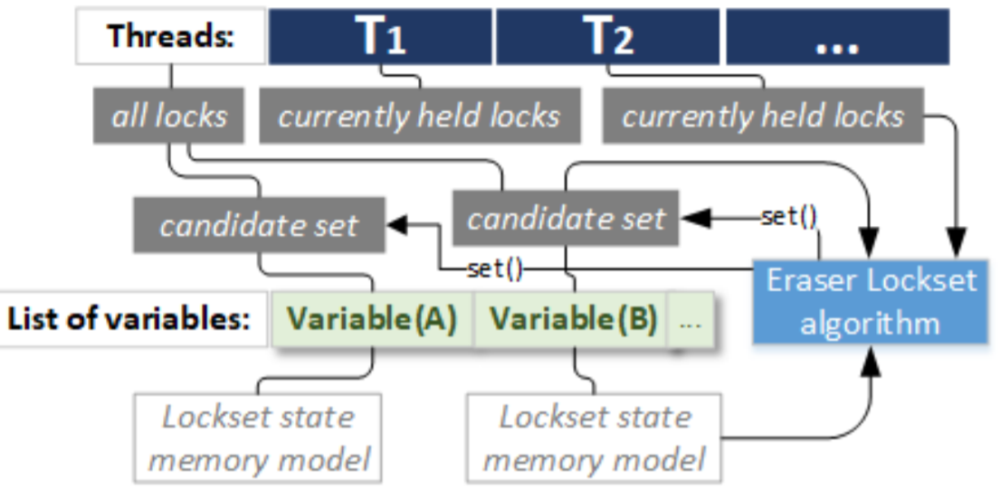

ArchViMP overview structure
Figure 1 show the overview structure of ArchViMP framework where the interaction of the framework with external systems is depicted.
 Figure 1 - The overview structure of ArchViMP framework
Figure 1 - The overview structure of ArchViMP framework
Keywords: Concurrent programming·Multithreading programming·Architectural abstraction·Architectural views
Figure 1 show the overview structure of ArchViMP framework where the interaction of the framework with external systems is depicted.
Figure 1 - The overview structure of ArchViMP framework
We receive three text files as the input for our framework. In below we clarify the format of each.
variable name,Address of memory,Data type;
395293680,{395293680},INT;CONSTANT;
step_simu,{394729264},INT;CONSTANT;
tasks,{394729520},POINTER;POINTER;
max_step_simu,{394729552},INT;CONSTANT;
h_c,{393974944},DOUBLE;CONSTANT;
Vz_control_50483_delta_e_c_delta_e_c,{394798512},DOUBLE;CONSTANT;

Figure 1 - The overview structure of ArchViMP framework